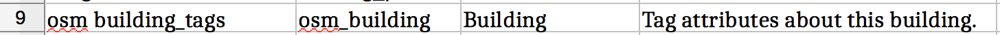
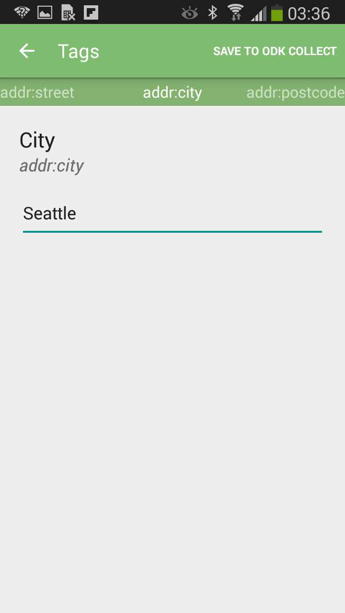

Creating Forms
The primary change to the forms in OpenDataKit is that we’ve added anosm question type. Rather than including a geographic point or shape directly in the data of a form, we instead have an osm question that refers to an OSM file that gets created in OpenMapKit.
This is particularly important for two reasons:
-
A survey about a specific, identifiable feature on a map is far more useful than a GPS point. There is no ambiguity about the place you are surveying.
-
Surveys can directly enrich OpenStreetMap by adding tags to OSM features. You can create easily accessible public information for OpenStreetMap in addition to your private, domain specific ODK survey data.
An OSM question is a new “media type”, which means that it functions in the survey in the same manner as a photo or video. When an osm question is specified in a survey, ODK Collect opens OpenMapKit, providing parameters for the tags to be entered for an OSM feature that you will select.
Basic OpenMapKit Example Form
If you download this Basic OpenMapKit Example form, you can see a simple OSM question. This question is named osm_building. In the type column, it is defined to be osm. It also has a parameter of building_tags.

This parameter is referenced in the osm sheet, between choices and settings.
OSM Sheet

The osm sheet has three columns: list name, name, and label. This sheet defines the tagging parameters that will be sent to OpenMapKit.
| A | B | C | |
|---|---|---|---|
| 1 | list name | name | label |
list name has two functions.
-
It defines the set of tags that OpenMapKit will add to an OSM feature.
-
It defines the set of tag values selectable for a given OSM tag. (optional)
In the survey sheet, our osm_building question had a type parameter of building_tabs. In the osm sheet, we have several rows with the list name of building_tabs. This is the set of OSM tags the user will answer in OpenMapKit.
The set of OSM tags has a list name suffix of tags. The values in the name column are the tag keys that are recognized in OSM. The values in the label column are the labels that will be presented to the user when entering values for the given OSM tag.
Often times we do not want the user directly typing in values for an OSM tag. Typing in a specific string value is error prone, and if there is a set of possible values that we want for a given tag, we want to present these values as a multiple choice question to the user.
Notice that one of the building_tags has the name building.
| 8 | building_tags | building | Building |
We want to give the user multiple choices of values for a building tag. These are the corresponding tag value choices that will be presented to the user in OpenMapKit:
| 11 | building | residential | Residential |
| 12 | building | commercial | Commercial |
| 13 | building | industrial | Industrial |
| 14 | building | yes | Other |
This step is optional, and if you do not provide a set of tag values, the user will manually type in a value for a given question.
| Multiple Choice OpenMapKit Tag Question | Manual String Value OpenMapKit Tag Question |
|---|---|
 |
 |